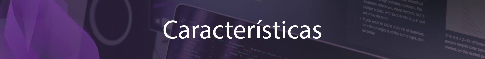

Elixir es un lenguaje de programación funcional, lo que significa que se centra en funciones matemáticas y estructuras de datos inmutables. Esto hace que sea una excelente opción para la construcción de alto rendimiento, sistemas distribuidos que necesitan para manejar grandes cantidades de tráfico. Elixir también hace especial hincapié en la concurrencia, lo que permite a los desarrolladores escribir código que puede ejecutar varias tareas simultáneamente. Esto hace que sea una opción ideal para la construcción de aplicaciones que necesitan para manejar un gran número de solicitudes a la vez.
Elixir es de tipado dinámico, lo que significa que no es necesario declarar explícitamente los tipos de variables. En su lugar, el lenguaje utiliza la concordancia de patrones para determinar el tipo de una variable en tiempo de ejecución. Esto hace que Elixir sea más flexible que los lenguajes de tipado estático como Java, pero también requiere pruebas más cuidadosas para garantizar que el código funciona como se espera.